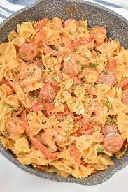

Cajun Pasta

A rich creamy dish with a cajun kick!
A spicy and rich dish that will take you back to your last trip to the Big Easy. Serves up to 6 people
Ingredients
- 1 lb uncoooked shrimp
- 8 oz bowtie pasta
- 1 cup heavy cream
- 1 tbsp olive oil
- 1 tbsp butter
- 1/2 cup parmesan
- 1 1/2 tbsp Tony Chachere's
Directions
- Add salt to pot of water and bring to a boil. Cook pasta to al dente doneness. Before draining, scoop out at least ½ cup of the cooking water. Drain pasta and set aside.
- While the pasta is cooking, cook the shrimp and sauce. Combine shrimp with cajun seasoning and olive oil in bowl. Toss to combine.
- Heat large skillet over medium high heat. Add butter and melt. Add shrimp in a single layer and cook until golden brown on each side, turning only once. You may have to cook shrimp in two batches to allow enough room. Once done cooking, transfer cooked shrimp to a clean plate and reduce heat to medium low.
- Add heavy cream to pan and scrape bottoms to release any food that is stuck to the bottom. Allow cream to bubble. Reduce heat to low and stir in parmesan cheese to melt. Add cooked pasta and shrimp and stir to coat. If sauce needs to be thinned, add pasta water, one tablespoon at a time, until desired consistency is achieved.